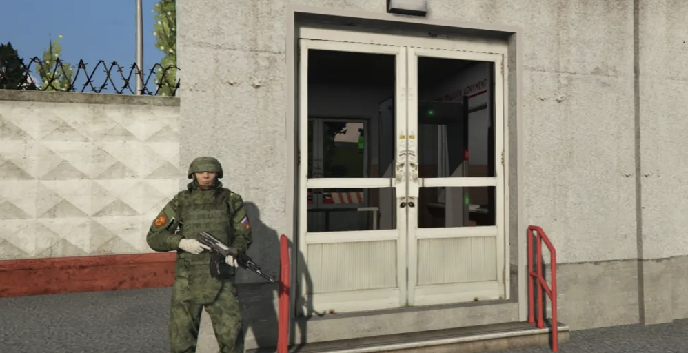
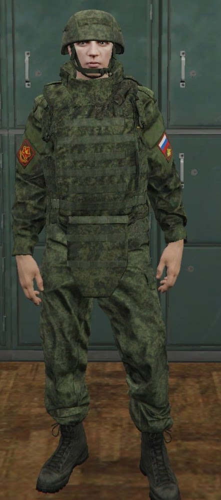
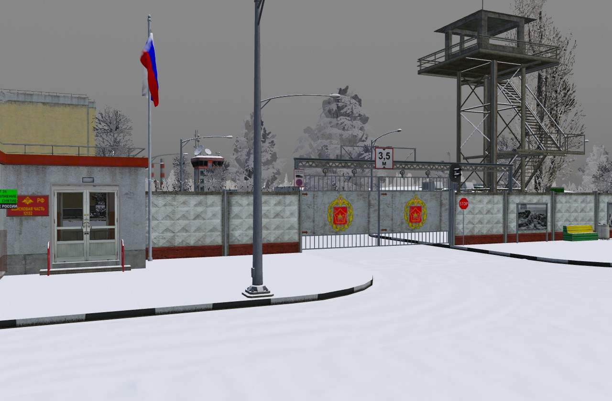
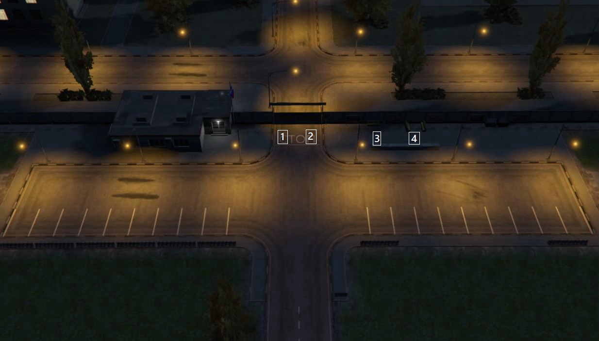
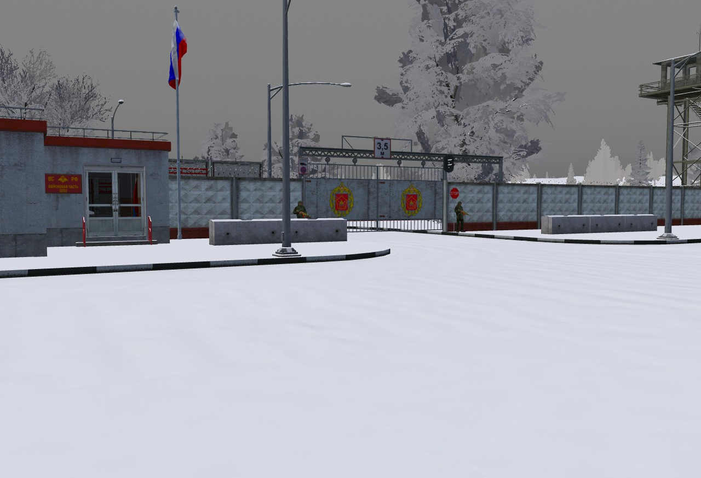
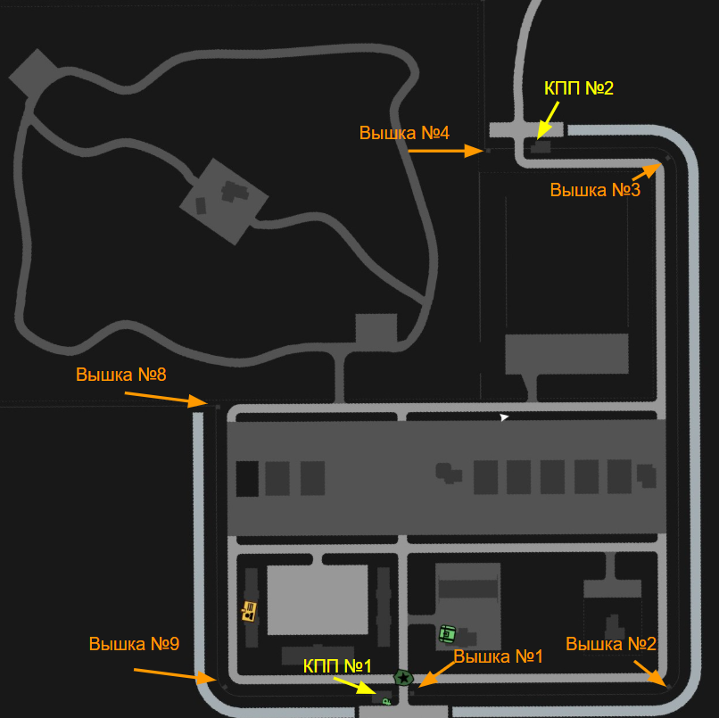

Посты
Информация по несению службы, обязанностям военнослужащих, форме одежды и докладам.
Пост КПП №1 (проходная)
Фотография поста

Форма одежды

Обязанности военнослужащих на КПП №1 (проходная)
Задачи:
- Никого не впускать без служебной цели.
- Пресечение проникновений на территорию В/Ч.
- Помощь постовым на КПП-1 при нападении.
Количество постовых и форма одежды
Пост КПП-1 (проходная) необходим Вам для повышения с рядового на ефрейтора.
Форма: полевая №2 с оружием в руках.
Максимальное количество на посту: 2 человека.
Форма доклада
По прибытии Командира или Заместителя Командира бригады подать команду: СМИРНО!
Товарищ Генерал-Майор (Полковник),
за время моего дежурства происшествий произошло
(или произошло то-то).
Докладывал Постовой по КПП №1 (проходная)
Ефрейтор Иванов.
Доклады по службе
Докладывает: Рядовой Иванов | Пост КПП №1 (проходная) | Минуты: 20 | Состав: 1 | Код: 1 | Доклад окончен
Докладывает: Рядовой Иванов | Пост КПП №1 (проходная) | Минуты: 40 | Состав: 1 | Код: 1 | Доклад окончен
Докладывает: Рядовой Иванов | Пост КПП №1 (проходная) | Минуты: 60 | Состав: 1 | Код: 1 | Доклад окончен
Докладывает: Рядовой Иванов | Пост КПП №1 (проходная) сдал | Состав: 1 | Код: 1 | Доклад окончен
Пост КПП №1
Фотографии поста


Форма одежды
Обязанности военнослужащих на КПП №1
- Проверка документов у прибывающих и убывающих лиц.
- Проверка наличия одобренного рапорта на отгул/отпуск у убывающего военнослужащего.
- Контроль и пресечение попыток попасть на территорию лиц, не имеющих на это прав.
- Обеспечение безопасности проезда на ВЧ и выезда.
- Сохранение правопорядка на прилегающей территории.
Количество постовых и форма одежды
Количество: 2-4 человека (по приказу Командира или Заместителей командира бригады + 2 человека).
Форма одежды: №2 полевая с оружием в руках.
Порядок пропуска КПП №1
- Служебный транспорт.
- Премьер-министр.
- МО и его заместители / Надзорные органы (СК, прокуратура, судьи, Председатель Гос. Думы и его заместители) строго пешком.
- ЦГБ на вызов.
- Лица имеющие пропуск (служебный / одноразовый).
- Старший состав не при исполнении (без формы) на личном транспорте, занесенный в реестр гос. номеров.
- Колонна правительства.
- Военный и поставочный конвой.
- Конвой призыва.
- Патруль ВП.
- Мобильная группа ССО.
ФЗ для КПП №1
ФЗ о закрытых и охраняемых территориях.
20.2. Охраняемыми территориями являются:
- Контрольно-пропускные пункты войсковых частей и парковочные комплексы перед ними.
- Военные комиссариаты.
ФЗ «Об обороне» №52-ФЗ
Статья 12. Права Вооруженных Сил Российской Федерации.
При нарушении правил используйте данные законы и требуйте покинуть территорию.
Форма доклада
Товарищ Генерал-Майор (Полковник),
за время моего дежурства происшествий произошло
(или произошло то-то).
Докладывал Постовой по КПП №1
Ефрейтор Иванов.
Доклады по службе
Докладывает: Рядовой Иванов | Пост КПП №1 | Минуты: 20 | Состав: 1 | Код: 1 | Доклад окончен
Докладывает: Рядовой Иванов | Пост КПП №1 | Минуты: 40 | Состав: 1 | Код: 1 | Доклад окончен
Докладывает: Рядовой Иванов | Пост КПП №1 | Минуты: 60 | Состав: 1 | Код: 1 | Доклад окончен
Докладывает: Рядовой Иванов | Пост КПП №1 сдал | Состав: 1 | Код: 1 | Доклад окончен
Пост КПП №2
Фотографии поста


Форма одежды
Обязанности военнослужащих на КПП №2
- Проверка документов у прибывающих и убывающих лиц.
- Проверка наличия одобренного рапорта на отгул/отпуск.
- Контроль и пресечение попыток попасть на территорию лиц, не имеющих на это прав.
- Обеспечение безопасности проезда на ВЧ и выезда.
- Сохранение правопорядка на прилегающей территории.
Количество постовых и форма одежды
Количество: 2-4 человека (по приказу Командира или Заместителей командира бригады + 2 человека).
Форма одежды: №2 полевая с оружием в руках.
Порядок пропуска КПП №2
- Служебный транспорт.
- Премьер-министр.
- МО и его заместители / Надзорные органы.
- ЦГБ на вызов.
- Лица имеющие пропуск.
- Старший состав в реестре гос. номеров.
- Колонна правительства.
- Военный и поставочный конвой.
- Конвой призыва.
- Патруль ВП.
- Мобильная группа ССО.
ФЗ для КПП №2
ФЗ о закрытых и охраняемых территориях.
20.2. Охраняемыми территориями являются:
- Контрольно-пропускные пункты войсковых частей и парковочные комплексы перед ними.
- Военные комиссариаты.
ФЗ «Об обороне» №52-ФЗ
Статья 12. Права Вооруженных Сил Российской Федерации.
При нарушении правил используйте данные законы и требуйте покинуть территорию.
Форма доклада
Товарищ Генерал-Майор (Полковник),
за время моего дежурства происшествий произошло
(или произошло то-то).
Докладывал Постовой по КПП №2
Ефрейтор Иванов.
Доклады по службе
Докладывает: Рядовой Иванов | Пост КПП №2 | Минуты: 20 | Состав: 1 | Код: 1 | Доклад окончен
Докладывает: Рядовой Иванов | Пост КПП №2 | Минуты: 40 | Состав: 1 | Код: 1 | Доклад окончен
Докладывает: Рядовой Иванов | Пост КПП №2 | Минуты: 60 | Состав: 1 | Код: 1 | Доклад окончен
Докладывает: Рядовой Иванов | Пост КПП №2 сдал | Состав: 1 | Код: 1 | Доклад окончен
Пост "Вышка"
Фотографии поста


Форма одежды
Обязанности караульного на Вышке
Задачи: пресечение попыток нападения на воинскую часть, помощь постовым КПП.
Количество караульных и форма одежды
Количество: 1 человек.
Форма одежды: №2 полевая с оружием в руках.
Форма доклада
По прибытии Командира или Заместителя Командира
бригады подать команду:
СМИРНО!
Товарищ Генерал-Майор (Полковник),
за время моего дежурства происшествий произошло
(или произошло то-то).
Докладывал Караульный
Ефрейтор Иванов.
Доклады по службе
Докладывает: Рядовой Иванов | Пост Вышка | Минуты: 20 | Состав: 1 | Код: 1 | Доклад окончен
Докладывает: Рядовой Иванов | Пост Вышка | Минуты: 40 | Состав: 1 | Код: 1 | Доклад окончен
Докладывает: Рядовой Иванов | Пост Вышка | Минуты: 60 | Состав: 1 | Код: 1 | Доклад окончен
Докладывает: Рядовой Иванов | Пост Вышка сдал | Состав: 1 | Код: 1 | Доклад окончен
Пост "Штаб"
Фотография поста

Форма одежды

Обязанности военнослужащих в Штабе
- Охрана служебных помещений штаба.
- Поддержание чистоты и порядка в помещениях штаба.
- Выполнение воинского приветствия каждому входящему военнослужащему.
- По прибытии Командира бригады, Заместителей командира или Начальника штаба подать команду «СМИРНО!» и доложить по установленной форме.
Количество дневальных и форма одежды
Количество: 2 человека.
Форма одежды: Костюм повседневный №2 общевойсковой без оружия в руках.
Форма доклада
По прибытии Командира или Заместителя Командира
бригады необходимо подать команду:
СМИРНО!
Если оружие находится в руках — рука к головному убору не прикладывается.
Товарищ Генерал-Майор (Полковник),
за время моего дежурства происшествий произошло
(или произошло то-то).
Докладывал Дневальный по штабу
Ефрейтор Иванов.
Доклады по службе
Докладывает: Рядовой Иванов | Пост Штаб | Минуты: 20 | Состав: 1 | Код: 1 | Доклад окончен
Докладывает: Рядовой Иванов | Пост Штаб | Минуты: 40 | Состав: 1 | Код: 1 | Доклад окончен
Докладывает: Рядовой Иванов | Пост Штаб | Минуты: 60 | Состав: 1 | Код: 1 | Доклад окончен
Докладывает: Рядовой Иванов | Пост Штаб сдал | Состав: 1 | Код: 1 | Доклад окончен